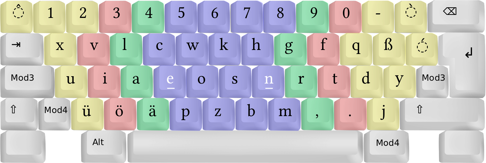

Keyboards
Jonathan Reeve
Keyboard History
1870: Hansen Writing Ball

1870: Hansen Writing Ball
- First mass-produced typewriter
- Used by Friedrich Nietzsche
- Nietzsche's aphoristic "telegraph style" philosophy influenced by this
1870: Hansen Writing Ball
- Nietzche very frustrated
- N: "Our writing tools are also working on our thoughts"
1874: Scholes and Glidden Type-writer
- Manufactured by Remington Comapany
- (Sewing machine manufacturers)
1874: Scholes and Glidden Type-writer

1874: Scholes and Glidden Type-writer

1874: Scholes and Glidden Type-writer
- QWERTY layout prevents jamming of physical keys
- Letters for typewriter placed on first row to aid salesmen
Keyboard Layout
Think about fingers
- How do they move across your keyboard?
What is the most common letter in English?
- Why is it on the top row of the left hand?
QWERTY Heatmap

1936: Dvorak

Dvorak Heatmap

2006: Colemak Layout
- Some compromise with QWERTY
- The most efficient
2006: Colemak Layout

Make Your Own Heatmap
patrick-wied.at/projects/heatmap-keyboard/
In Other Languages
- QWERTY often still used
- Problems with QWERTY are amplified
2017: Bépo (French)

2004: Neo

Accesibility Issues

Mobile phone keyboards
- They have the opportunity to change this
- But they mostly reproduce this problem
Keyboard Design
Left-staggered columns
- Especially bad for the left hand
- That's where the E is
Ortholinear keyboards
- Fixes the problem with left-staggered keyboards
- Easier to make
Ortholinear keyboards

Ortholinear keyboards

Columnar-staggered keyboards
- Account for different finger lengths
- Account for natural hand placement
Columnar-staggered keyboards

75%, 60%, 40% keyboards
- Move your hands less
- Fewer carpal-tunnel problems
- Less looking at the keyboard
40% Keyboard

Split Keyboards

Switches
- Not all fingers have the same strength — why should switches be?
- Modularity is better for hackability
- And Right-to-repair
Keyboard Theory
Technological Debt
- Inherited technological problems
We use keys that are on our keyboards
- Emoji (mobile phone keyboards)
- The @ symbol, orig. used for prices, now used frequently in email addresses
Vestigial typewriter keys
- Underscore: _ : used for underlining
- Carat: ^ : used for circumflexes (fête in French)
- Tilde: ~ : used
- Now all used for other things
We rarely type glyphs that aren't on our keyboards
- em-dash: —
- en-dash: –
- Many don't even know what these are
We need some glyphs, but can't type them

Try typing these English words
- café
- caffè
- naïve
Bad keyboard design leads to stupidity
- It's harder to think of typing letters we can't see on our keyboards
False dilemmas
- Keyboards, GUI menus provide the illusion of choice
- Hobson's choice
- "You can choose any color, so long as it's black"
- Who knows how to use an em-dash now?
Language itself is a keyboard
Spelling is a keyboard
- Why is spelling so hard?
- We invented spelling! Who's in charge here?
- Through, cough, bough, although, rough
- Why do we have to type all those letters?
We invent few new words
- Except for new products
Most new words are jokes
- (Because we are nervous about violating language rules!)
- Older generation: misspellings: OK
- Younger generation: pormanteaux: ginormous, bromance
English is conservative
- Conservative, brittle, inexpressive
- You probably disagree unless you speak several other non-European languages fluently, then you get it.
Conservative thinking
Even politically liberal people are conservative about new ideas
- New thoughts, ideas are scare
- But it's just not what I'm used to!
- But no one else does it!
Argumentum ad populum
- "If idea X is so great, why isn't it espoused by millions?"
- Logical fallacy
- Evaluating ideas through social valor is bad
Argumentum ad populum
- Why do we celebrate people who are visionaries, or ahead of their time, yet fail to recognize them among us?
Argumentum ad populum
- Groupthink
- A concept from 1984 (Orwell)
- No one individually believes in an idea, but everyone thinks others do
Nietzche again
"Our writing tools are also working on our thoughts"
Solutions / Recommendations
Use a good keyboard layout
- Colemak is a good starter
Use a good keyboard
- Keyboard.io's Atreus is a good starter
Define your own ergonomics
- Set up your workstation to work with, not against, your body.
Define your own input
- Program your keyboard such that it outputs the glyphs you want
Use a good language
- Esperanto is an exceptionally easy language (learn in 2 weeks)
- Spoken by 5 million people worldwide
- Fixes spelling with transparent orthography
Rethink technological debt
- Recognize technological debt
- Think outside the box
- James Dyson: inexperienced designers are better
Regognize cognitive bias
- Where do your preferences and opinions come from?